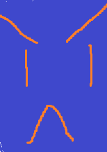

Notable Mobs:
Mechanized Peacekeeper:
Most dangerous mob
Tear Gas: Spawns swirlies
Charged shield: Strong tankbuster that cleaves damage on rest of the party depending on damage taken by tank
Refreshment vendor:
Dangerous caster
Iced spritzer: Single target stun like Harvester, can be interrupted.
Hired Assassin:
Potential wipe if not interrupted.
Toxic Blades: Buffs itself with poison damage, must be interrupted.
Fan of Knives: Pulses AOE damage, can be CC'd.
Addled Thug:
Can cause ninja-pulls.
Uppercut: Charges one player, knocking them back.
Mech Jockey:
Will try to run towards unmanned mech, will become Mechanized Peacekeeper if it succeeds.
First Boss
C.O.C. Pummeler
Shocking Claw: Frontal with swirlies.
Footbomb Launcher: Spawns 6 clickable bombs that will explode, everyone needs to kick the bombs into boss before Shocking Claw
Coin Magnet: Sucks in coins that have spawned, tank boss away from coins.
Before Second Boss
Notable Mobs:
Azerite Extractor:
Don't pull 2 of these at the same time
Puncture: Strong tankbuster
Rapid Extraction: Pulses AOE damage and spawns swirlies.
Earthshaper:
Strong caster
Earthlance: Single target nuke, must be kicked.
Stonefury:
Another strong caster with a shield cast that doesn't do a lot but has,
Furious Quake: Huge AOE damage nuke, needs to be kicked.
Taskmaster Askari:
Very terrifying miniboss, constantly buffs mobs around him and puts bleed on tank.
Charge: Charges and nukes one player then swirlies around him
Second Boss
Azerokk
Spawns two Earthragers upon pull that fixate onto random players, tries to bleed them. Kite these.
Azerite infusion: Empowers one of the ragers, can't be CC'd now.
Tectonic Slam: Frontal.
Resonant Quake: AOE damage that leaves slowing zone that can be used when kiting adds.
Call Earthragers: Summons more Earthragers.
Before Third Boss
Notable Mobs:
V.C. Alchemist:
Caster with one dangerous cast.
Transmute: Enemy to goo: Targets one player and polymorphs them if not kicked.
Mastermind:
Mob with uninterruptable single target damage and,
Brainstorm: Spawns moving swirlies that silence.
Tester:
Echo Blade: Sends out projectile to all players, need to spread out so they dont echo on eachother.
Third Boss
Rixxa Fluxflame
When pulled will cover area with swirlies that create dangerous puddles
Azerite Catalyst: Targets a player that will spawn more swirlies that leave azerite, bait them around the existing puddles
Propellent Blast: Targets a player and will blow them away like with a leafblower, bait this towards puddles as this pushes puddles back too
Boss will refill the room after 3Propellent Blasts
Before final boss
Notable Mobs:
V.O.W Machine:
Big dangerous mech
Charged shot:Pulsing aoe damage channel
Deploy Crawler Mine:Deploys a mine that fixates someone, if you walk into it you die. Can be cc'd so help your buddies.
Final Boss
Mogul Razdonk
Mogul will spawn 2 Boom bots that will go to two seperate edges of the room. Depending on where they are facing (either horizontally or vertically)
they will draw a line of swirlies.
Think of them like the dragons on the first boss of Grim Batol. ALWAYS watch where they are and where the swirlies will be.
You can't really dodge the swirlies on reaction.
Homing Missile: Targets one player with a homing missile with a large circle of impact area, kite this out.
Gatling Gun : Targets the tank with a black cone, this cone will then spin around like a gatling gun. Tank faces this away from the group.
During intermission the boss will spawn two snipers that constantly shoot at random players. Mark one and burst it down as this does heavy damage.
Drill smash: Targets one player with an arrow, there are pillars that spawn around the room, targeted player baits it on the pillar. When he lands on a pillar
he does ALOT of aoe damage. After Mogul smashed 3 pillars the intermission will end.